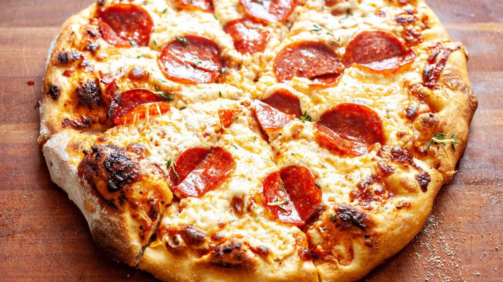

Pizza Recipe
Recipe courtesy The Foot Charlatan

Servings: 8
Total time (prep & cook): 3hrs
Description
Everybody loves pizza, but most of us have only been exposed to the pizzas you can buy frozen at the store,
or freshly-made at a fast food chain like Dominos or Pizza hut.
But real pizza doesn't come from a fast food oven -- it comes from your own kitchen! Today, we're going to
teach you how to make the most delicious homemade pizza you've ever eaten. Here's what you need.
Ingredients
For the dough, you'll need...
- 1 & 1/2 cups warm water
- 2 & 1/4 tsp active dry yeast
- 1 tbs granulated sugar
- 2 tsp kosher salt
- 3 tbs olive oil
- 3 & 3/4 cups flour
For the Pizza, you'll need...
- 1 16-oz ball of pizza dough
- 1 tbs olive oil
- 1 cup pizza sauce (store-bought is fine)
- 3 oz thinly-sliced mozzarella cheese
- 5 oz shredded mozzarella cheese
- 2.5 oz pepperoni
- 2 tbs shredded parmesan
Instructions
Pizza Dough
- Add 1 and 1/2 cups warm water to a large bowl or stand mixer. The temperature should be like nice bath water: not so hot that
you can't hold your finger in it comfortably. I like to check with my wrist, it is more honest than fingers when it comes to
temperature.
- Add 2 and 1/4 teaspoons active dry yeast and 1 tablespoon sugar to the water. Wait about 3 minutes until you see bubbles forming.
It should look slightly foamy. If no change has happened, you have killed your yeast. Murderer! Dump it and start over.
- Once you have added you yeast, warm water, and sugar to a bowl and you know for sure it's not dead (should be bubbly), add
2 teaspoons kosher salt, 3 tablespoons olive oil, and 3 and 3/4 cups of flour, 1 cup at a time.
- Once all your flour is incorporated into your dough**, it's time to knead for 5 minutes. You can do this by hand on a flour-dusted
countertop (in which case you should knead more like 7 minutes), or using the dough hook on a stand mixer. The dough should be smooth,
elastic, slightly sticky, and soft. If after a couple minutes of kneading, the dough has not come together in a ball
(still sticking to the sides of the bowl) then it's time to add a bit more flour.
- Shape your dough into a ball and place in a large greased bowl, turning over once so the top of the dough is greased.
Sometimes I cheat and just leave it in the bowl I kneaded it in, but know that it will stick to the sides
(often I just lift up the dough, spray the bowl with nonstick spray, and set it back down. Spray the top of the dough too so
it doesn't dry out.) You just need a nice spot for the dough to rise.
- Cover the bowl with a tea towel or plastic wrap and let rise in a warm place. I like to turn my oven on to 350 for about 45 seconds,
then turn the oven off. This creates a nice warm environment for rising dough. If the oven racks are too hot to touch with your fingers,
the oven got too hot, wait until it has cooled to put your covered dough in. (Make sure you remove dough before
preheating your oven for pizza baking!)
- Rising time: This is totally up to you. 20-30 minutes is the minimum if you are in a rush. (I do it all the time.)
You can rise 1 hour. Or 2 hours if you want. You can let it rise 4 hours, or 8 hours, coming back every 2 hours or so to punch it down.
The longer you wait, the more flavorful and textured your crust will be. See below for overnight instructions.
- Once your dough has risen, punch it down and separate into two balls to make two 12-inch pizzas. (Separate the dough in 3 balls if you
like super thin crust!) Place each ball on a greased or floured surface and let rest, covered with a tea towel or plastic wrap,
for another 5-20 minutes, whatever you have time for.
- Deflate each ball with your hands. Your pizza dough is ready to go!
Pizza
- Preheat your oven to 550 degrees F, or as high as it will go (at least 475.) Let the stone preheat for 30 minutes.
I don't care when your oven beeps to tell you it's at temperature. Set a timer, 30 minutes at least!
- Prepare a work surface. I prefer to rub my counter with oil, but you can lightly dust it with flour if you have a very sticky dough.
(Too much flour can turn your dough tough.)
- Roll out the dough. Place your ball of pizza dough in the center of your prepared work surface and use your hands to press it down,
starting from the center. Keep gently patting out the dough, moving the dough outward from the center. I usually use my hands for pizza
dough, gently patting and stretching (and yes, picking it up and maybe even tossing!), but you can also use a rolling pin.
Make sure to keep rotating the pin so that you get a roughly circular shape. It doesn't have to be perfect!
Even if you have used a rolling pin, I like to use my fingers afterward to shape the edges into a thicker crust.
- Continue patting and stretching the dough gently with your hands until it is about 12 inches across.
- Transfer the dough to a square of parchment paper. I highly recommend using parchment paper because it’s SO much easier transferring
your pizza into the oven. You can pick it up carefully with your hands and rearrange it on the paper, or wrap it around your rolling pin
to help transfer. (I've tried rolling the dough out directly onto parchment paper. It doesn't work well.) Make sure you stretch out the
dough so that it is about 12 inches.
- Drizzle about a tablespoon of olive oil over the top of your dough. Use your hands or a pastry brush to rub the oil all over the
top of the dough, especially the edges of the crust. This layer of oil helps provide a barrier between the toppings and the dough,
helping it cook more evenly.
- If you love a thicker crust pizza, let the rolled-out dough rest for 10 minutes. You can skip this rest no problem.
- Par bake. Once the oven is up to temperature, we are going to do a 1 to 2 minute par bake. This step is technically not necessary,
but I never skip it. It guarantees not only a thoroughly cooked crust, but a nice and crispy one. Nobody wants a doughy pizza, yuck.
(If you want to skip it, you can proceed with topping your pizza).
- Pulling on the edge of the parchment paper, slide your pizza dough onto your pizza peel or flat baking sheet. Open the oven and pull
on the parchment paper again to slide the pizza dough and the parchment paper onto the hot hot pizza stone (or pizza pan).
Your whole body is basically inside the oven during this procedure so please be careful and make sure there are no toddlers running
around who could climb right in and burn to death (these are the thoughts that keep me up at night).
- Shut the oven door and par bake for 1-2 minutes, until the dough is slightly puffed. Set a timer, don't walk away! Pull on the
parchment paper again to transfer the half-baked dough back onto your pizza peel. Keep the oven door shut as much as possible so
you don't lose heat. Poke down any large bubbles on your crust.
- Top your pizza. Leave the crust on the peel while you add your toppings.
Add 1 cup of pizza sauce (I like to spread it around with a ladle).
Add 3 ounces thinly sliced mozzarella, and then top with 5 ounces of shredded mozzarella. I like a lot of cheese and this is about
the max amount you can add without weighing down your pizza so much that it doesn't cook all the way through. This isn't the Bible,
you can eyeball the amounts on cheese, just keep in mind there is a limit if you want a properly cooked pizza.
Add about a half package of pepperoni (or olives, mushrooms, ham and pineapple, sausage, red onions, or literally any toppings you
want. See post for ideas.)
Sprinkle 2 tablespoons shredded parmesan cheese over your toppings.
- Bake the pizza. (See note if you don't have a pizza stone*) Transfer the pizza back onto the pizza stone (or pan), this time without
the parchment paper. You want the pizza to do its final bake directly on the stone. (The stone is porous and absorbs moisture, giving
you a crispier crust.) Your crust is sturdy enough after the 1-2 minute par bake that it shouldn't be too hard to push the pizza onto
the stone without the paper.
Bake the pizza for about 8-12 minutes. This is going to depend on how hot your oven is, and how thick your pizza is. The edges of the
crust should be golden brown, and the cheese should be bubbly and also starting to lightly brown. If you don't have a pizza stone, use
a spatula to lift the edge of your pizza to make sure that it is browning all across the center on bottom. If the bottom is still white,
you are looking at a doughy pizza. No thanks. Leave it in longer.
If the top of your pizza is browning too quickly but the bottom crust isn't done, tent the top of the pizza with foil to slow browning.
- Remove your pizza from the oven using the pizza peel. Slide it directly onto a cooling rack to help keep that bottom crust from getting
soggy. Let cool a couple minutes, then transfer to a cutting board. Slice into 8 pieces and devour!